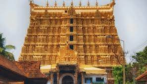

Allepey
Located around 53 kilometers from Cochin, the town is celebrated for its backwaters which connect Cochin and Kumarakom to the North. Besides backwaters and the sea, Alleppey is also famous for its ageless temples, serpentine canals draining into the ocean, colorful lagoons, rice paddies, and a 150-year old lighthouse.
Munnar
Munnar is situated at the confluence of three mountain streams : Muthirapuzha, Nallathanni and Kundala and the word 'Munnar' means three rivers in Malayalam. Situated about 1600m above sea level, the hill station had been the summer resort of the British Government during the colonial era. It is famous for Tea Estates.
Cochin
Popularly known as the Queen of Arabian Sea, the city also flaunts one of the finest natural harbours of the world and was the centre of the world spice trade for many centuries.It is a major port city on the Malabar Coast of India bordering the Laccadive Sea, which is a part of the Arabian Sea.
Thekkady
The sanctuary is famous for its dense evergreen, semi-evergreen, moist deciduous forests and savanna grass lands. It is home to herds of elephants, sambar, tigers, gaur, lion-tailed macaques and Nilgiri langurs.Situated in Idukki district of Kerala, at an altitude of 900-1800 m above sea level

Kollam
Kollam has been the centre of cashew industry in Kerala from the time of the Portuguese in 16th c. Having hundreds of working cashew factories in the district, Kollam still continues to be the largest processed cashew exporter in India. It is located 70 km north of the state's capital Thiruvananthapuram

Thiruvananthapuram
Thiruvananthapuram, also spelled Tiruvanantapuram, formerly Trivandrum, city, capital of Kerala state, southwestern India. Padmanabhaswamy Temple, the beaches of Kovalam and Varkala, the backwaters of Poovar and Anchuthengu and its Western Ghats tracts of Ponmudi and the Agastya Mala.
Varkala
Its beach is famous for its natural springs which are said to have medicinal qualities. The 2000-year-old Janardhanaswamy Temple along with the Sivagiri Mutt attract a steady stream of visitors all year long.It is located 40 kilometres north-west of Thiruvananthapuram and 37 km south-west of Kollam.